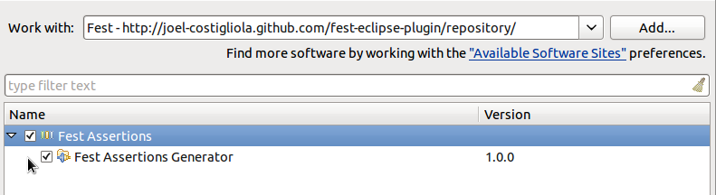

Welcome to Fest eclipse plugin documentation !
This plugin will help you to get assertions for your own classes by generating them.
Fest plugin installation
Go to : Help > Install new software > Add...then set :
- Name to 'Fest' (or whatever you want)
- location to : http://joel-costigliola.github.com/fest-eclipse-plugin/repository/
If everything is ok, you should be able to select and install Fest plugin
The install takes some times (don't know why ...).
Accept the licence agreement without reading it :) ... restart eclipse and you are done.
How it works
Let's say you want to generate assertions specific to the Person class below :
package example;
public class Player {
private String name;
private int age;
private boolean rookie;
private String[] teams;
public String getName() {
return name;
}
public int getAge() {
return age;
}
public boolean isRookie() {
return rookie;
}
public String[] getTeams() {
return teams;
}
public Player(String name, int age, boolean rookie, String[] teams) {
this.name = name;
this.age = age;
this.rookie = rookie;
this.teams = teams;
}
}
To generate the assertions class corresponding to Player :
right click on Player class > sources > Generate Fest Assertions, as shown below :
Generated assertions
The generated assertions class (PlayerAssert) has been created in the same package but in test source directory (default being 'src/test/java/'). You can define another test source directory in plugin preferences : Window > Preferences > Fest Assertions.
The assertion generator will provide assertions for each property, here's an example of PlayerAssert usage :
String[] teams = {"Cleveland", "Miami"};
Player player = new Player("Lebron James", 28, false, teams);
// you can make a static import if you don't want to see PlayerAssert.
PlayerAssert.assertThat(player).hasAge(28).hasName("Lebron James").hasTeams("Miami");
The generated assertion class is just a quick start for you to have custom assertions, you should complete it with richer assertions to suit your needs !
Note that the generated assertions code relies on Fest assert core 2.0M8, it should be on your classpath along with its dependencies (see this page to install Fest core assertions).
What you could do now, is to provide a single entry point for all assertions : Fest ones and yours. It is easy, inherit from Assertions and add assertThat methods for your own types, see the example below or this one taken from fest-examples project :
package example;
import org.fest.assertions.api.Assertions;
/**
* A single entry point for all assertions, Fest standard assertions and MyProject custom assertions.
* With MyProjectAssertions.assertThat static import, you will access all possible assertions (standard and custom ones)
*/
public class MyProjectAssertions extends Assertions { // extending make all standard Fest assertions available.
// add an entry point for Player assertions
public static PlayerAssert assertThat(Player actual) {
return new PlayerAssert(actual);
}
}
Complete PlayerAssert class source
package example;
import static java.lang.String.format;
import org.fest.assertions.api.AbstractAssert;
import org.fest.assertions.api.Assertions;
/**
* {@link Player} specific assertions - Generated by CustomAssertionGenerator.
*/
public class PlayerAssert extends AbstractAssert {
/**
* Creates a new {@link PlayerAssert} to make assertions on actual Player.
* @param actual the Player we want to make assertions on.
*/
public PlayerAssert(Player actual) {
super(actual, PlayerAssert.class);
}
/**
* An entry point for PlayerAssert to follow Fest standard assertThat() statements.
* With a static import, one's can write directly : assertThat(myPlayer) and get specific assertion with code completion.
* @param actual the Player we want to make assertions on.
* @return a new {@link PlayerAssert}
*/
public static PlayerAssert assertThat(Player actual) {
return new PlayerAssert(actual);
}
/**
* Verifies that the actual Player's age is equal to the given one.
* @param age the given age to compare the actual Player's age to.
* @return this assertion object.
* @throws AssertionError - if the actual Player's age is not equal to the given one.
*/
public PlayerAssert hasAge(int age) {
// check that actual Player we want to make assertions on is not null.
isNotNull();
// we overrides the default error message with a more explicit one
String errorMessage = format("Expected Player's age to be <%s> but was <%s>", age, actual.getAge());
// check
if (actual.getAge() != age) { throw new AssertionError(errorMessage); }
// return the current assertion for method chaining
return this;
}
/**
* Verifies that the actual Player's name is equal to the given one.
* @param name the given name to compare the actual Player's name to.
* @return this assertion object.
* @throws AssertionError - if the actual Player's name is not equal to the given one.
*/
public PlayerAssert hasName(String name) {
// check that actual Player we want to make assertions on is not null.
isNotNull();
// we overrides the default error message with a more explicit one
String errorMessage = format("Expected Player's name to be <%s> but was <%s>", name, actual.getName());
// check
if (!actual.getName().equals(name)) { throw new AssertionError(errorMessage); }
// return the current assertion for method chaining
return this;
}
/**
* Verifies that the actual Player is rookie.
* @return this assertion object.
* @throws AssertionError - if the actual Player is not rookie.
*/
public PlayerAssert isRookie() {
// check that actual Player we want to make assertions on is not null.
isNotNull();
// we overrides the default error message with a more explicit one
String errorMessage = format("Expected actual Player to be rookie but was not.", actual);
// check
if (!actual.isRookie()) throw new AssertionError(errorMessage);
// return the current assertion for method chaining
return this;
}
/**
* Verifies that the actual Player's teams contains the given String elements.
* @param teams the given elements that should be contained in actual Player's teams.
* @return this assertion object.
* @throws AssertionError if the actual Player's teams does not contain all given String elements.
*/
public PlayerAssert hasTeams(String... teams) {
// check that actual Player we want to make assertions on is not null.
isNotNull();
// check that given String varargs is not null.
if (teams == null) throw new AssertionError("Expecting teams parameter not to be null.");
// check with standard error message (see commented below to set your own message).
Assertions.assertThat(actual.getTeams()).contains(teams);
// uncomment the 4 lines below if you want to build your own error message :
// WritableAssertionInfo assertionInfo = new WritableAssertionInfo();
// String errorMessage = "my error message";
// assertionInfo.overridingErrorMessage(errorMessage);
// Iterables.instance().assertContains(assertionInfo, actual.getTeamMates(), teamMates);
// return the current assertion for method chaining
return this;
}
/**
* Verifies that the actual Player has no teams.
* @return this assertion object.
* @throws AssertionError if the actual Player's teams is not empty.
*/
public PlayerAssert hasNoTeams() {
// check that actual Player we want to make assertions on is not null.
isNotNull();
// we overrides the default error message with a more explicit one
String errorMessage = format("Expected actual <%s> not to have teams but had :\\n%s", actual, actual.getTeams());
// check
if (actual.getTeams().length > 0) throw new AssertionError(errorMessage);
// return the current assertion for method chaining
return this;
}
}